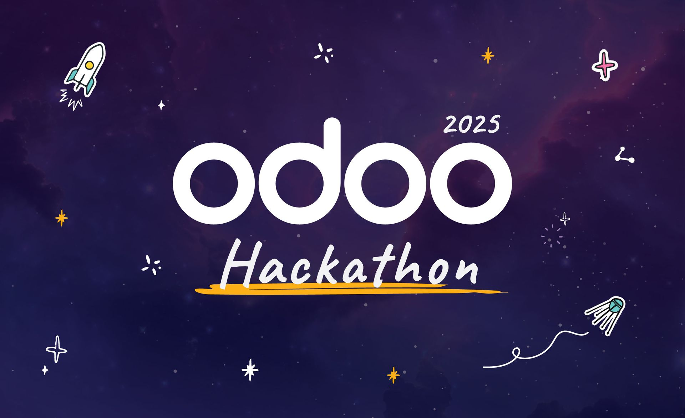

KAPsule Temporelle
Application web de cryptographie visuelle combinant stéganographie, chiffrement et authentification par reconnaissance caméra.
Technologies
Vue d'ensemble du projet
KAPsule Temporelle est une application web innovante développée lors d'un hackathon de 24h. Elle combine cryptographie visuelle, stéganographie et authentification biométrique pour créer une "capsule temporelle" numérique sécurisée.
Ma contribution principale s'est concentrée sur le système de reconnaissance d'images, développant un module d'authentification multi-modal utilisant 4 modèles d'intelligence artificielle en temps réel.
Architecture du Système
Backend FastAPI
API REST avec endpoints pour l'encodage/décodage stéganographique et gestion de l'authentification caméra
Frontend SvelteKit
Interface utilisateur moderne avec upload de fichiers, sélection d'emojis-indices et visualisation des résultats
Module Cryptographie
Chiffrement Fernet (AES-128) + stéganographie LSB pour double protection des messages secrets
Système IA Multi-Modal
Intégration de YOLO v8, MediaPipe, et DeepFace pour authentification biométrique avancée
Mon Système de Reconnaissance d'Images
Phase 1 : Détection d'Émotions (5 secondes)
- DeepFace : Analyse des expressions faciales en temps réel
- Défi : L'utilisateur doit montrer une émotion joyeuse pendant 5 secondes continues
- Optimisation : Système de temporisation pour éviter les faux positifs
Phase 2 : Défi "Affond avec Gobelet" (3 secondes)
- YOLO v8 : Détection d'objets (tasse, bouteille, téléphone, télécommande)
- MediaPipe Pose : Reconnaissance de posture corporelle (33 landmarks)
- Algorithme personnalisé : Détection du geste de porter un objet vers le visage
- Normalisation : Adaptation selon la distance à la caméra
Fonctionnalités
- Stéganographie LSB : Cachage invisible de messages dans les pixels d'images mèmes
- Chiffrement Fernet : Protection cryptographique avec clés uniques par message
- Authentification Multi-Niveaux : Combinaison émotion + pose + détection d'objets
- Emojis-Indices : Système d'aide-mémoire encodé dans l'image
- Optimisations Temps Réel : Traitement sur images 160x160 pour performances CPU
- Résistance aux Attaques : Impossible d'utiliser une photo ou vidéo pré-enregistrée
Défis Techniques
- Intégration Multi-Modèles : Coordination de 4 modèles d'IA différents en parallèle
- Optimisation Performance : Fonctionnement temps réel sur CPU uniquement (pas de GPU requis)
- Détection de Pose Complexe : Algorithme personnalisé pour reconnaître le geste "affond"
- Gestion des États : Temporisation et tolérance de perte pour un UX fluide
- Sécurité Biométrique : Système résistant aux attaques de replay et spoofing
Innovations Techniques
Authentification Comportementale :
- Preuve de présence physique via mouvements coordonnés
- Détection de vivacité par expressions faciales naturelles
- Validation multi-sensorielle (visage + corps + objets)
Optimisations Algorithmiques :
- Normalisation des distances selon la morphologie utilisateur
- Système de seuils adaptatifs pour robustesse
- Pipeline optimisé pour traitement 30+ FPS sur matériel standard
Technologies d'IA Utilisées
YOLO v8 Medium
80 classes d'objets COCO, ~25M paramètres, détection temps réel
MediaPipe Pose
33 landmarks corporels 3D, architecture BlazePose, précision sub-pixel
DeepFace
7 émotions détectées, backend FER optimisé, analyse expressions faciales
OpenCV
Capture webcam, traitement vidéo, visualisation temps réel
Résultats et Impact
- Performance : Authentification multi-modale en <5 secondes
- Sécurité : Résistance aux attaques de replay et spoofing
- Accessibilité : Fonctionne sur matériel standard (CPU uniquement)
- Innovation : Premier système combinant 4 modalités d'IA pour l'authentification
- Code Qualité : Architecture modulaire et optimisée pour déploiement